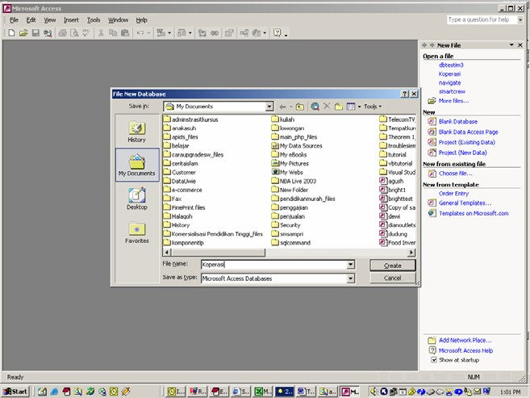

Di Microsoft Access ada bagian apa aja sih.
a. Table digunakan untuk menyimpan data
b. Query digunakan untuk memanipulasi data
c. Form digunakan untuk frontend aplikasi. Biasanya untuk menampilkan data, menambah data dll.
d. Report digunakan untuk membuat laporan
e. Macro digunakan untuk melakukan satu atau beberapa fungsi.
f. Switchboard digun
Bagaimana memulai microsoft Access
1. Klik Start pilih Program lalu pilih Microsoft Access
2. Setelah terbuka klik Blank Database, pada jendela file new database isikan nama file yang diinginkan misalkan Koperasi (Untuk membuat aplikasi penjualan Barang di Koperasi PT. AGH.)

Copyright © Herlan Lesmana
Created with the Freeware Edition of HelpNDoc: Easily create PDF Help documents